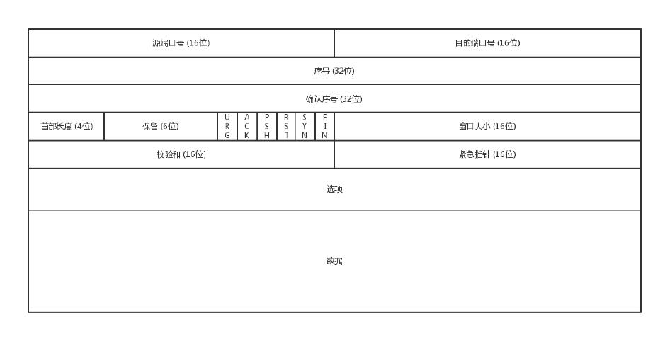
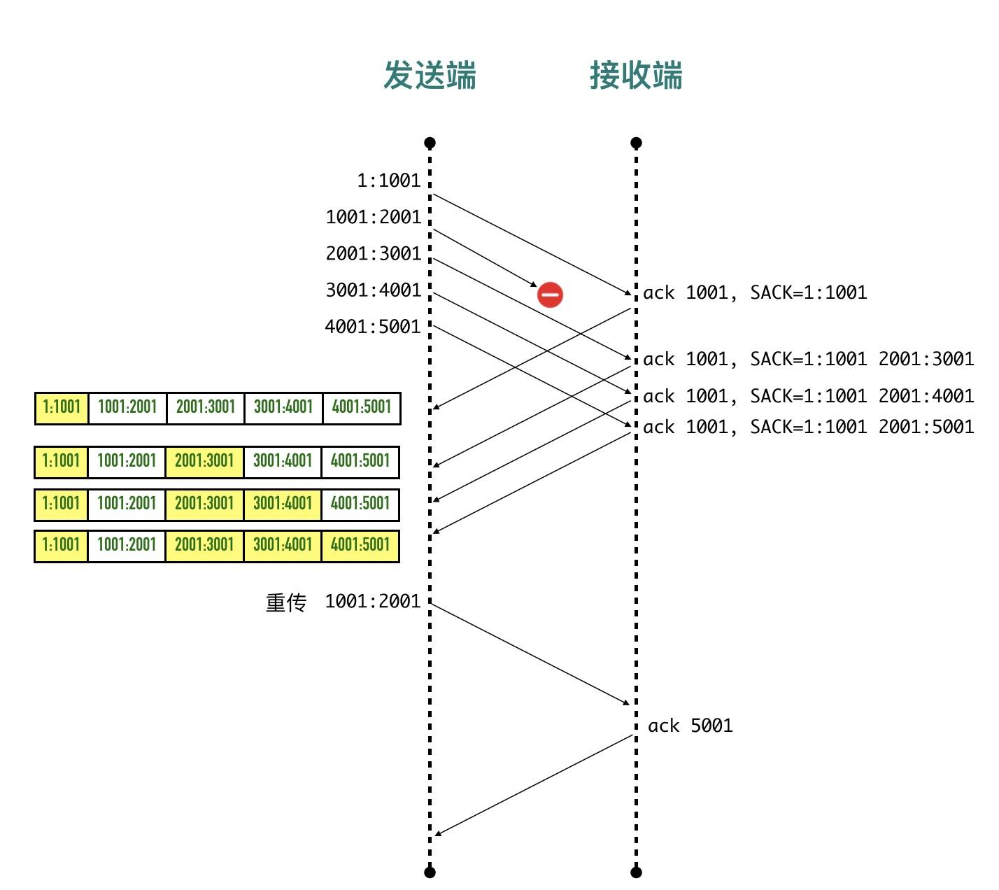

TCP
TCP 认为网络环境是恶劣的，丢包、乱序、重传，拥塞都是常有的事情，一言不合就可能送达不了，因而要从算法层面来保证可靠性。 主要有下
面几个方面：
- 对每个包提供校验和
- 包的序列号解决了接收数据的乱序、重复问题
- 重传机制
- 流量控制、拥塞控制
什么是流
TCP 面向字节流的协议。流的含义是没有固定的报文边界。
假设调用 2 次 write 函数往 socket 里依次写 500 字节、800 字节。write 函数只是把字节拷贝到内核缓冲区，最终会以多少条报文发送
出去是不确定的：
- 情况 1：分为两条报文依次发出去 500 字节 和 800 字节数据
- 情况 2：两部分数据合并为一个长度为 1300 字节的报文，一次发送
- 情况 3：第一部分的 500 字节与第二部分的 500 字节合并为一个长度为 1000 字节的报文，第二部分剩下的 300 字节单独作为一个报文发送
- 情况 4：第一部分的 400 字节单独发送，剩下100字节与第二部分的 800 字节合并为一个 900 字节的包一起发送。
- 情况 N：更多可能的拆分组合
上面出现的情况取决于诸多因素：路径最大传输单元 MTU、发送窗口大小、拥塞窗口大小等。
TCP 包头

序号
通过 TCP 传输的字节流的每个字节都分配了序列号，序列号（Sequence number，SEQ）指的是本报文段第一个字节的序列号。为了解决乱序，重
复的问题。
序列号加上报文的长度，就可以确定传输的是哪一段数据。
在 SYN 报文中，序列号用于交换彼此的初始序列号，在其它报文中，序列号用于保证包的顺序。
初始序列号
在建立连接之初，通信双方都会各自选择一个序列号，称之为初始序列号（Initial Sequence Number, ISN）。在建立连接时，通信双方
通过 SYN 报文交换彼此的 ISN。
初始序列号是通过源地址、目标地址、源端口、目标端口和随机因子通过 MD5 进行进行计算。再加入时间因子计算得出。
确认序号
TCP 使用确认序号（Acknowledgment number, ACK）来告知对方下一个期望接收的序列号，小于此确认号的所有字节都已经收到。
发出去的包要确认，不然怎么知道有没有收到。没有收到就重发，直到送达。
- ACK 包本身不需要被确认，否则就会无穷无尽死循环了
- 确认号永远是表示小于此确认号的字节都已经收到
状态位
双方要维护连接的状态，这些带状态位的包的发送，会引起双方的状态变更。
- SYN（Synchronize）：发起一个连接，同步双方的初始序列号
- ACK（Acknowledge）：确认数据包
- RST（Reset）：表示复位，用来关闭异常连接
- FIN（Finish）：结束连接，通知对方我发完了所有数据，准备断开连接，后面我不会再发数据包给你了。
- PSH（Push）：告知对方这些数据包收到以后应该马上交给上层应用，不能缓存起来
窗口大小
TCP 要做流量控制，双方各自声明一个窗口，表示自己当前能够的处理能力，避免发的太快或者太慢。TCP 还会做拥塞控制。
用于表示窗口大小的 “Window Size” 只有 16 位，也就是窗口大小最大是 65535 字节（64KB）。
最大传输单元
数据链路层传输的帧大小是有限制的，不能把一个太大的包直接塞给链路层，这个限制被称为
最大传输单元（Maximum Transmission Unit, MTU）。
以太网的帧最小的帧是 64 字节，除去 14 字节头部和 4 字节 CRC 字段，有效荷载最小为 46 字节。最大的帧是 1518 字节，有效荷载最大
为 1500，这个值就是以太网的 MTU。计算一下传输 100KB 的数据，至少需要 （100 * 1024 / 1500) = 69 个以太网帧。

不同的数据链路层的 MTU 是不同的。通过 netstat -i 可以查看网卡的 mtu。
路径 MTU
一个包从发送端传输到接收端，中间要跨越很多个网络，每条链路的 MTU 都可能不一样，这个通信过程中最小的 MTU 称为路径 MTU（Path MTU）。
就好比开车有时候开的是双向 4 车道，有时候可能是乡间小路一样。
路径 MTU 就跟木桶效应是一个道理，木桶的盛水量由最短的那条短板决定，路径 MTU 也是由通信链条中最小的 MTU 决定。
IP 分段
IPv4 数据报的最大大小为 65535 字节，这已经远远超过了以太网的 MTU，而且有些网络还会开启巨帧（Jumbo Frame）能达到 9000 字节。
当一个 IP 数据包大于 MTU 时，IP 会把数据报文进行切割为多个小的片段(小于 MTU），使得这些小的报文可以通过链路层进行传输。
IP 头部中有一个 13 位表示分片偏移量的字段，用来表示该分段在原始数据报文中的位置。
例如下面的包：
More fragments 处于 set 状态，表示后面还有其它分片，Fragment offset: 185 这里并不是表示分片偏移量为 185，wireshark 这
里显示的时候除以了 8，真实的分片偏移量为 185 * 8 = 1480。
如果 More fragments 处于 Not set 状态，表示这是最后一个分片了。
TCP 最大段大小
TCP 为了避免被发送方分片，会主动把数据分割成小段再交给网络层，最大的分段大小称之为 MSS（Max Segment Size）。1
MSS = MTU - IP header头大小 - TCP 头大小
这样一个 MSS 的数据恰好能装进一个 MTU 而不用分片。
在以太网中 TCP 的 MSS = 1500（MTU） - 20（IP 头大小） - 20（TCP 头大小）= 1460。
TCP 有一个 socket 选项 TCP_MAXSEG，可以用来设置此次连接的 MSS，如果设置了这个选项，则 MSS 不能超过这个值。
端口号
端口号可以分为 3 类：
- 熟知端口号（well-known port），熟知端口号由专门的机构
由 IANA 分配和控制，
范围为0~1023。比如 HTTP 使用 80端口，HTTPS 使
用 443 端口，ssh 使用 22 端口。 - 已登记的端口（registered port）,已登记的端口不受 IANA 控制，不过由 IANA 登记并提供它们的使用情况清单。它的范围为
1024～49151。
49151 是取的端口号最大值 65536 的 3/4 减 1。已登记的端口占用了大约 75% 端口号的范围。常见的有 MySQL：3306，Redis：6379。 - 临时端口号（ephemeral port），如果应用程序没有调用 bind() 函数将 socket 绑定到特定的端口上，那么 TCP 和 UDP 会为该 socket 分配
一个唯一的临时端口。IANA 将49152～65535范围的端口称为临时端口（ephemeral port）或动态端口（dynamic port），也称为
私有端口（private port）。
三次握手

- 客户端发送的一个段是 SYN 报文，这个报文只有 SYN 标记被置位。SYN 报文不携带数据，但是它占用一个序号（因为 SYN 段需要对方的确认，需要
占用一个序列号），下次发送数据序列号要加一。客户端会随机选择一个数字作为初始序列号（ISN） - 服务端收到客户端的 SYN 段以后，将 SYN 和 ACK 标记都置位。
- 客户端发送三次握手最后一个 ACK 段，这个 ACK 段用来确认收到了服务端发送的 SYN 段。因为这个 ACK 段不携带任何数据，且不需要再
被确认，这个 ACK 段不消耗任何序列号。
三次握手除了建立连接，还要沟通 TCP 包的序号。A 告诉 B 我发起的请求从哪个序号开始，B 告诉 A，B 发起的包的序号从哪个开始。
为什么序号不都从 1 开始？是为了防止冲突。
例如，A 连上 B，发送了 1，2，3 三个包，但是 3 丢失了或者绕路了，重新发送，但是后来 A 又掉线了，重新连上 B 后，又从 1 开始发，但是
只发了 1，2，但是上次绕路的那个 3 又回来了，发给了 B，B 自然认为，这就是下一个包，于是发生了错误。
因而，每个连接都要有不同的序号，起始序号是随时间变化的，32 位，每 4S 加一。
为什么握手要三次
为什么是三次，不是两次或者四次？因为通信双方都要保证通信可以有来有回。例如，A 和 B，A 发起一个连接（第一次握手），B 收到请求，
并发送应答给 A（第二次握手），说明 B 可以建立连接，但 B 不知道 A 是否收到应答包，可能丢失了，所以 A 需要应答 B 的应答包
（第三次握手），B 收到这个消息，才能确认连接建立。
这也就是说，其实四次握手甚至更多也是可以的，但是只要双方的消息有去有回，就基本可以了。
如果 A 在建立连接后，就是不发数据。我们在程序设计的时候，可以要求开启 keepalive 机制，即使没有真实的数据包，也有探活包。另外，
作为服务端 B 的程序设计者，对于 A 这种长时间不发包的客户端，可以主动关闭，从而空出资源来给其他客户端使用。
四次挥手
A：B 啊，我不想玩了。
B：哦，你不想玩了啊，我知道了。
这个时候，还只是 A 不想玩了，也即 A 不会再发送数据，但是 B 能不能在 ACK 的时候，直接关闭呢？当然不可以了，很有可能 A 是发完了最后的
数据就准备不玩了，但是 B 还没做完自己的事情，还是可以发送数据的，所以称为半关闭（half-close）的状态。
B：A 啊，好吧，我也不玩了，拜拜。
A：好的，拜拜
这样整个连接就关闭了。
FIN 段是可以携带数据的，比如客户端可以在它最后要发送的数据块可以“捎带” FIN 段。
但是这个过程有没有异常情况呢？
- A 说完“不玩了”之后，直接跑路，是会有问题的，因为 B 还没有发起结束，而如果 A 跑路，B 就算发起结束，也得不到回答，B 就不知
道该怎么办了。 - A 说完“不玩了”，B 直接跑路，也是有问题的，因为 A 不知道 B 是还有事情要处理，还是过一会儿会发送结束。A 没有收到回复，则 A 会重新
发送“不玩了”
TCP 协议专门设计了几个状态来处理这些问题。
A 收到 “B 说知道了”，就进入 FIN_WAIT_2 的状态，如果这个时候 B 直接跑路，则 A 将永远在这个状态。TCP 协议里面并没有对这个状态的
处理，但是 Linux 有，可以调整 tcp_fin_timeout 这个参数，设置一个超时时间。
如果 B 没有跑路，发送了 “B 也不玩了” 的请求到达 A 时，A 发送“知道 B 也不玩了”的 ACK 后，从 FIN_WAIT_2 状态结束，按说 A 可以跑路了，
但是最后的这个 ACK 万一 B 收不到呢？则 B 会重新发一个“B 不玩了”，这个时候 A 已经跑路了的话，B 就再也收不到 ACK 了，因而 TCP 协议要
求 A 最后等待一段时间 TIME_WAIT，这个时间要足够长，长到如果 B 没收到 ACK 的话，“B 说不玩了”会重发的，A 会重新发一个 ACK 并且足够时
间到达 B。
A 直接跑路还有一个问题是，A 的端口就直接空出来了，但是 B 不知道，B 原来发过的很多包很可能还在路上，如果 A 的端口被一个新的应用占用了，
这个新的应用会收到上个连接中 B 发过来的包，虽然序列号是重新生成的，但是这里要上一个双保险，防止产生混乱，因而也需要等足够长的时间，等
到原来 B 发送的所有的包都死翘翘，再空出端口来。
等待的时间设为 2MSL，MSL 是 Maximum Segment Lifetime，报文最大生存时间，它是任何报文在网络上存在的最长时间，超过这个时间报
文将被丢弃。因为 TCP 报文基于是 IP 协议的，而 IP 头中有一个 TTL 域，是 IP 数据报可以经过的最大路由数，每经过一个处理他的路由器此
值就减 1，当此值为 0 则数据报将被丢弃，同时发送 ICMP 报文通知源主机。协议规定 MSL 为 2 分钟，实际应用中常用的是 30 秒，1 分钟
和 2 分钟等。
还有一个异常情况就是，B 超过了 2MSL 的时间，依然没有收到它发的 FIN 的 ACK，怎么办呢？按照 TCP 的原理，B 当然还会重发 FIN，这个时
候 A 再收到这个包之后，A 就表示，我已经在这里等了这么长时间了，已经仁至义尽了，之后的我就都不认了，于是就直接发送 RST，B 就知道 A 早
就跑了。
为什么时间是两个 MSL
- 1 个 MSL 确保四次挥手中主动关闭方最后的 ACK 报文最终能达到对端
- 1 个 MSL 确保对端没有收到 ACK 时，重传的 FIN 报文可以到达，避免因为无法重传 ACK，被动关闭方因此不能及时可靠释放。
挥手可以变为三次吗
是可以的，因为有延迟确认的存在，第二步的 ACK 经常会跟随第三步的 FIN 包一起捎带回客户端。
TCP 状态机
CLOSED
这个状态是一个假想的状态，是 TCP 连接还未开始建立连接或者连接已经彻底释放的状态。
从 CLOSE 状态转换为其它状态有两种可能：
- 主动打开（Active Open），客户端主动发送一个 SYN 包准备三次握手，被称为主动打开（Active Open）
- 被动打开（Passive Open），服务端会监听一个特定的端口，等待客户端的新连接，同时会进入 LISTEN 状态，称为被动打开
LISTEN
通常是服务端调用 bind、listen 系统调用监听特定端口时进入到LISTEN状态，等待客户端发送 SYN 报文三次握手建立连接。
SYN-SENT
客户端发送 SYN 报文等待 ACK 的过程进入 SYN-SENT状态。同时会开启一个定时器，如果超时还没有收到 ACK 会重发 SYN。
SYN-RCVD
服务端收到 SYN 报文以后会回复 SYN+ACK，然后进入 SYN-RCVD 状态，等待对端 ACK。
ESTABLISHED
SYN-SENT 或者 SYN-RCVD 状态的连接收到对端确认 ACK 以后进入 ESTABLISHED 状态，连接建立成功。
FIN-WAIT-1
主动关闭的一方发送了 FIN 包，等待对端回复 ACK 时进入 FIN-WAIT-1 状态。
FIN-WAIT-2
处于 FIN-WAIT-1 状态的连接收到 ACK 确认包以后进入 FIN-WAIT-2 状态，这个时候主动关闭方的 FIN 包已经被对方确认，等待被
动关闭方发送 FIN 包。
CLOSE-WAIT
当有一方想关闭连接的时候，发送 FIN 包给对端，这个被动关闭方，收到 FIN 包以后进入 CLOSE-WAIT 状态。
TIME-WAIT
TIME-WAIT 是收到了被动关闭方的 FIN 包，发送确认 ACK 给对端，开启 2MSL 定时器，定时器到期时进入 CLOSED 状态，连接释放。
LAST-ACK
LAST-ACK 顾名思义等待最后的 ACK。是被动关闭的一方，发送 FIN 包给对端等待 ACK 确认时的状态。
当收到 ACK 以后，进入 CLOSED 状态，连接释放。
CLOSING
CLOSING状态在同时关闭情况下出现。这里的同时其实并不是时间意义上的同时，而是指的是在发送 FIN 包还未收到确认之前，
收到了对端的 FIN 的情况。
- 最初客户端和服务端都处于 ESTABLISHED 状态
- 客户端发送 FIN 包，等待对端对这个 FIN 包的 ACK，随后进入 FIN-WAIT-1 状态
- 处于 FIN-WAIT-1 状态的客户端还没有等到 ACK，收到了服务端发过来的 FIN 包
- 收到 FIN 包以后客户端会发送对这个 FIN 包的的确认 ACK 包，同时自己进入 CLOSING 状态，继续等自己 FIN 包的 ACK
- 处于 CLOSING 状态的客户端终于等到了 ACK，随后进入 TIME-WAIT
- 在 TIME-WAIT 状态持续 2*MSL，进入 CLOSED 状态
TFO
重传机制
ACK 是表示这之前的包都已经全部收到
如果发送 5000 个字节的数据包，因为 MSS 的限制每次传输 1000 个字节，分 5 段传输：
数据包 1 发送的数据正常到达接收端，接收端回复 ACK 1001，表示 seq 为 1001 之前的数据包都已经收到，下次从 1001 开始发。
数据包 2（1001:2001）因为某些原因未能到达服务端，其他包正常到达，这时接收端也不能 ack 3 4 5 数据包，因为数据包 2 还没收到，接收端只能
回复 ack 1001。第 2 个数据包重传成功以后服务器会回复 5001，表示 seq 为 5001 之前的数据包都已经收到了。
超时重传
超时重试，也即对每一个发送了，但是没有 ACK 的包，都有设一个定时器，超过了一定的时间，就重新尝试。但是这个超时的时间如何评估呢？这
个时间不宜过短，时间必须大于往返时间 RTT，否则会引起不必要的重传。也不宜过长，这样超时时间变长，访问就变慢了。
估计往返时间，需要 TCP 通过采样 RTT 的时间，然后进行加权平均，算出一个值，而且这个值还是要不断变化的，因为网络状况不断的变化。除
了采样 RTT，还要采样 RTT 的波动范围，计算出一个估计的超时时间。由于重传时间是不断变化的，我们称为自适应重传
算法（Adaptive RetransmissionAlgorithm）。
如果数据包 2 丢了，重传之后又丢了，TCP 的策略是超时间隔加倍。每当遇到一次超时重传的时候，都会将下一次超时时间间隔设为先前值的两倍。
两次超时，就说明网络环境差，不宜频繁反复发送。
快速重传与 SACK
超时触发重传存在的问题是，超时周期可能相对较长。有一个可以快速重传的机制，当接收方收到一个序号大于下一个所期望的报文段时，就检
测到了数据流中的一个间格，于是发送三个冗余的 ACK，客户端收到 3 个或以上重复 ACK，就在定时器过期之前，重传丢失的报文段。
例如，接收方发现数据包 3、4、5 都已经接收了，就是 2 没来，那肯定是丢了，于是发送三个 1001 的 ACK，要求下一个是 2。客户端
收到 3 个 1001 ACK，就会发现 2 的确丢了，不等超时，马上重发。
SACK
有一个问题，发送 3、4、5 包收到的全部是 ACK=1001，快速重传解决了一个问题: 需要重传。因为除了 2 号包，3、4、5 包也有可能丢失，那到底
是只重传数据包 2 还是重传 2、3、4、5 所有包？
解决办法就是在 TCP 头里加一个 SACK 的东西，可以将缓存的地图发送给发送方，例如：
- 收到 3 号包的时候在 ACK 包中告诉发送端：我目前收到的最大连续的包序号是 1000（ACK=1001），[1:1001]、[2001:3001] 区间的包我也收到了
- 收到 4 号包的时候在 ACK 包中告诉发送端：我目前收到的最大连续的包序号是 1000（ACK=1001），[1:1001]、[2001:4001] 区间的包我也收到了
- 收到 5 号包的时候在 ACK 包中告诉发送端：我目前收到的最大连续的包序号是 1000（ACK=1001），[1:1001]、[2001:5001] 区间的包我也收到了
这样发送端就清楚知道只用重传 2 号数据包就可以了，数据包 3、4、5已经确认无误被对端收到。这种方式被称
为 SACK（Selective Acknowledgment）。

流量控制
TCP 会把要发送的数据放入发送缓冲区（Send Buffer)，接收到的数据放入接收缓冲区（Receive Buffer），应用程序会不停的读取接收缓冲
区的内容进行处理。
流量控制做的事情就是，如果接收缓冲区已满，发送端应该停止发送数据。那发送端怎么知道接收端缓冲区是否已满呢？
为了控制发送端的速率，TCP 在收到数据包回复的 ACK 包里会带上自己接收窗口的大小，接收端需要根据这个值调整自己的发送策略。
发送窗口和接收窗口
wireshark 抓包中显示的 win=29312 指的就是接收窗口的大小。对方收到以后，会把自己的发送窗口限制在 29312 大小
之内。如果接收端处理能力有限，导致自己的接收缓冲区满，接收窗口大小为 0，发送端应该停止发送数据。
发送窗口
发送端的缓存里是按照包的 ID 一个个排列，根据处理的情况分成四个部分：
- 红色部分：发送了并且已经确认的。这部分就是你交代下属的，并且也做完了的，应该划掉的。
- 蓝色部分：发送了并且尚未确认的。这部分是你交代下属的，但是还没做完的，需要等待做完的回复之后，才能划掉。
- 绿色部分：没有发送，但是已经等待发送的。这部分是你还没有交代给下属，但是马上就要交代的。
- 黄色部分：没有发送，并且暂时还不会发送的。这部分是你还没有交代给下属，而且暂时还不会交代给下属的。
发送窗口的大小就是蓝色部分加上绿色部分。
可用窗口是发送端还能发送的最大数据包大小，就是绿色部分。
窗口的左边界表示成功发送并已经被接收方确认的最大字节序号，窗口的右边界是发送方当前可以发送的最大字节序号，滑动窗口的大小等于
右边界减去左边界。
当上图中的可用区域的 6 个字节（46~51）发送出去，可用窗口区域减小到 0，这个时候除非收到接收端的 ACK 数据，否则发送端将不能发送数据。
如果使用 wireshark 抓包，可以看到 TCP Window Full，表示包的发送方已经把对方所声明的接收窗口耗尽了。
TCP Zero Window
TCP zero window 是站在接收端角度来说的，TCP 包中 win= 表示接收窗口的大小，表示接收端还有多少缓冲区可以接收数据，当窗
口变成 0 时，表示接收端不能暂时不能再接收数据了。
一开始三次握手确定接收窗口大小为 360 字节。
- 发送端发送 140 字节给接收端，此时因为 140 字节在途未确认，所以它的可用滑动窗口大小为：360 - 140 = 220
- 接收端收到 140 字节以后，将这 140 字节放入TCP 接收区缓冲队列。正常情况下，接收端处理的速度非常快，这 140 字节会马上被应
用层取走并释放这部分缓冲区，同时发送确认包给发送端，这样接收端的窗口大小（RCV.WND)马上可以恢复到 360 字节，发送端收到确认包以
后也马上将可用发送滑动窗口恢复到 360 字节。但是如果因为高负载等原因，导致 TCP 没有立马处理接收到的数据包，收到的 140 字节没能全
部被取走，这个时候 TCP 会在返回的 ACK 里携带它建议的接收窗口大小，因为自己的处理能力有限，那就告诉对方下次发少一点数据。假设如上
图的场景，收到了 140 字节数据，现在只能从缓冲区队列取走 40 字节，还剩下 100 字节留在缓冲队列中，接收端将接收窗口从
原来的 360 减小 100 变为 260。 - 发送端接收到 ACK 以后，根据接收端的指示，将自己的发送滑动窗口减小到 260。所有的数据都已经被确认，这时候可用窗口大小
也等于 260 - 发送端继续发送 180 字节的数据给接收端，可用窗口= 260 - 180 = 80。
- 接收端收到 180 字节的数据，因为负载高等原因，没有能取走数据，将接收窗口再降低 180，变为 80，在回复给对端的 ACK 里携带回去。
- 发送端收到 ACK 以后，将自己的发送窗口减小到 80，同时可用窗口也变为 80
- 发送端继续发送 80 字节数据给接收端，在未确认之前在途字节数为 80，发送端可用窗口变为 0
- 接收端收到 80 字节的数据，放入接收区缓冲队列，但是入之前原因，没能取走，滑动窗口进一步减小到 0，在回复的 ACK 里捎带回去
- 发送端收到 ACK，根据发送端的指示，将自己的滑动窗口总大小减小为 0
零窗口探测包
现在发送端的滑动窗口变为 0 了，如果这样的话，发送方会定时发送窗口探测数据包，看是否有机会调整窗口的大小。当接收方比较慢的时
候，要防止低能窗口综合征，别空出一个字节来就赶快告诉发送方，然后马上又填满了，可以当窗口太小的时候，不更新窗口，直到达到一定大
小，或者缓冲区一半为空，才更新窗口。
拥塞控制问题
拥塞控制的问题，也是通过窗口的大小来控制的，前面的滑动窗口 rwnd 是怕发送方把接收方缓存塞满，而拥塞窗口 cwnd，是怕把网络塞满。
拥塞窗口初始值等于操作系统的一个变量 initcwnd，最新的 linux 系统 initcwnd 默认值等于 10。
真正的发送窗口大小 = 接收端接收窗口大小 与 发送端自己拥塞窗口大小两者的最小值。
如果接收窗口比拥塞窗口小，表示接收端处理能力不够。如果拥塞窗口小于接收窗口，表示接收端处理能力 ok，但网络拥塞。
发送端和接收端不会交换 cwnd 这个值，这个值是维护在发送端本地内存中的一个值。
TCP 的拥塞控制就是在不堵塞，不丢包的情况下，尽量发挥带宽。
慢启动
TCP 的拥塞控制主要来避免两种现象，包丢失和超时重传。一旦出现了这些现象就说明，发送速度太快了，要慢一点。但是一开始我怎么知道速度多快
呢，我怎么知道应该把窗口调整到多大呢？
每个 TCP 连接都有一个拥塞窗口的限制，最初这个值很小，随着时间的推移，每次发送的数据量如果在不丢包的情况下，“慢慢”的递增，这种机
制被称为慢启动。
拥塞控制是从整个网络的大局观来思考的，如果没有拥塞控制，某一时刻网络的时延增加、丢包频繁，发送端疯狂重传，会造成网络更重的负担，而更
重的负担会造成更多的时延和丢包，形成雪崩的网络风暴。
这个算法的过程如下：
- 三次握手以后，双方通过 ACK 告诉了对方自己的接收窗口（rwnd）的大小，之后就可以互相发数据了
- 通信双方各自初始化自己的「拥塞窗口」（Congestion Window，cwnd）大小。
- cwnd 初始值较小时，每收到一个 ACK，cwnd + 1，每经过一个 RTT，cwnd 变为之前的两倍。
假设 RTT 为 50ms，客户端和服务端的接收窗口为 65535 字节（64KB），初始拥塞窗口为：10 段（MSS），那么要达到 64KB 的吞吐量，
拥塞窗口的段数 = 65535 / 1460 = 45 段，需要的 RTT 次数 = log2（45 / 10）= 2.12 次，需要的时间 = 50 * 2.12 = 106ms。
也就是客户端和服务器之间的 64KB 的吞吐量，需要 2.12 次 RTT，100ms 左右的延迟。
慢启动阈值
慢启动拥塞窗口（cwnd）肯定不能无止境的指数级增长下去，否则拥塞控制就变成了拥塞失控了，它的阈值
称为慢启动阈值（Slow Start Threshold，ssthresh）
- 当 cwnd < ssthresh 时，拥塞窗口按指数级增长（慢启动）
- 当 cwnd > ssthresh 时，拥塞窗口按线性增长（拥塞避免）
拥塞避免
当 cwnd > ssthresh 时，拥塞窗口进入拥塞避免（Congestion Avoidance）阶段。
每收到一个确认后，cwnd 增加 1/cwnd，我们接着上面的过程来，一次发送八个，当八个确认到来的时候，每个确认增加 1/8，八个确认一共 cwnd 增
加 1，于是一次能够发送九个，变成了线性增长。但是线性增长还是增长，还是越来越多，直到有一天，水满则溢，出现了拥塞，这时候一般就会一下子
降低倒水的速度，等待溢出的水慢慢渗下去。拥塞的一种表现形式是丢包，需要超时重传，这个时候，将 sshresh 设为 cwnd/2，将 cwnd 设为 1，重
新开始慢启动。这真是一旦超时重传，马上回到解放前。但是这种方式太激进了，将一个高速的传输速度一下子停了下来，会造成网络卡顿。
当接收端发现丢了一个中间包的时候，发送三次前一个包的 ACK，于是发送端就会快速的重传，不必等待超时再重传。TCP 认为这种情况不严重，因为大部
分没丢，只丢了一小部分，cwnd 减半为 cwnd/2，然后 sshthresh = cwnd，当三个包返回的时候，cwnd = sshthresh +3，也就是没有一夜回到
解放前，而是还在比较高的值，呈线性增长。就像前面说的一样，正是这种知进退，使得时延很重要的情况下，反而降低了速度。但是如果你仔细想一下，
TCP 的拥塞控制主要来避免的两个现象都是有问题的。
- 第一个问题是丢包并不代表着通道满了，也可能是管子本来就漏水。例如公网上带宽不满也会丢包，这个时候就认为拥塞了，退缩了，其实是不对的。
- 第二个问题是 TCP 的拥塞控制要等到将中间设备都填充满了，才发生丢包，从而降低速度，这时候已经晚了。其实 TCP 只要填满管道就可以了，不应
该接着填，直到连缓存也填满。
为了优化这两个问题，后来有了 TCP BBR 拥塞算法。它企图找到一个平衡点，就是通过不断的加快发送速度，将管道填满，但是不要填满中间设备的缓
存，因为这样时延会增加，在这个平衡点可以很好的达到高带宽和低时延的平衡。
延迟确认
- 不是每个数据包都对应一个 ACK 包，因为可以合并确认。
- 也不是接收端收到数据以后必须立刻马上回复确认包。
如果收到一个数据包以后暂时没有数据要分给对端，它可以等一段时间（Linux 上是 40ms）再确认。如果这段时间刚好有数据要传给对端，ACK 就可
以随着数据一起发出去了。如果超过时间还没有数据要发送，也发送 ACK，以免对端以为丢包了。这种方式称为延迟确认。
可需要立即回复 ACK 的场景有：
- 如果接收到了大于一个 frame 的报文，且需要调整窗口大小
- 处于 quickack 模式（tcp_in_quickack_mode）
- 收到乱序包（We have out of order data.）
其它情况一律使用延迟确认的方式。
Linux 上并没有开关可以关闭延迟确认。
定时器
TCP 为每条连接建立了 7 个定时器：
- 连接建立定时器，当发送端发送 SYN 报文想建立一条新连接时，会开启连接建立定时器，如果没有收到对端的 ACK 包将进行重传。
- 重传定时器
- 延迟 ACK 定时器，在 TCP 收到数据包以后在没有数据包要回复时，不马上回复 ACK。这时开启一个定时器，等待一段时间看是否有数据需要回复。
- PERSIST 定时器，为零窗口探测而准备的。当接收端 B 接收窗口为 0 时，发送端 A 此时不能再发送数据，发送端此时开启 Persist 定时器。
- KEEPALIVE 定时器
- FIN_WAIT_2 定时器，主动关闭的一方收到 ACK 以后从 FIN_WAIT_1 进入 FIN_WAIT_2 状态等待对端的 FIN 包的到来，FIN_WAIT_2 定时器
的作用是防止对方一直不发送 FIN 包，防止自己一直傻等。 - TIME_WAIT 定时器，也称为 2MSL 定时器，主动关闭连接的一方在 TIME_WAIT 持续 2 个 MSL 的时间，超时后端口号可被安全的重用。